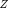
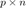
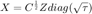

Section 3.3: M-estimator of scatter
This page contains simulations in Section 3.3: asymptotic behavior of M-estimator of scatter
Contents
M-estimator of scatter and the asymptotic equivalent (Theorem 3.3)
Generate a (Gaussian i.i.d.) random matrix  of dimension  and i.i.d. random Gamma(.5,2) vector tau Generate the associated data matrix 
close all; clear; clc coeff = 5; p = 100*coeff; n = 500*coeff; c = p/n; rng(928); eigs_C = [ones(p/4,1); 3*ones(p/4,1); 10*ones(p/2,1)]; C = diag(eigs_C); % population covariance tau = gamrnd(.5,2,n,1); eigs_tilde_C = tau; Z = randn(p,n); X = sqrtm(C)*Z*diag(sqrt(tau));
Empirical eigenvalues of the sample covariance matrix  versus the solution of fixed-point equation
versus the solution of fixed-point equation
SCM = X*(X')/n; eigs_SCM = eig(SCM); edges=linspace(min(eigs_SCM)*0.9,max(eigs_SCM)*1.1,300); clear i % make sure i stands for the imaginary unit y = 1e-5; zs = edges+y*1i; mu = zeros(length(zs),1); delta = [0,0]; % corresponds to [delta, delta_delta] in Theorem 2.6 for j = 1:length(zs) z = zs(j); delta_tmp = [1,1]; %watch_dog = 1; % to avoid possible numerical convergence issue while max(abs(delta-delta_tmp))>1e-6 %&& watch_dog < 50 delta_tmp = delta; delta(1) = -1/n/z*sum(eigs_C./( 1 + delta_tmp(2)*eigs_C )); delta(2) = -1/n/z*sum(eigs_tilde_C./( 1 + delta_tmp(1)*eigs_tilde_C )); end m = -1/p/z*sum(1./(1 + delta(2)*eigs_C) ); mu(j)=imag(m)/pi; end figure(1) histogram(eigs_SCM, 50, 'Normalization', 'pdf'); hold on; plot(edges,mu,'r', 'Linewidth',2); legend('Empirical eigenvalues of SCM', 'Limiting spectral measure', 'Interpreter', 'latex', 'FontSize', 15)

Fixed-point equation for M-estimator  and the asymptotic equivalent
and the asymptotic equivalent  per Theorem 3.3
per Theorem 3.3
alpha = 0.2; u = @(x) (1+alpha)./(alpha+x); phi = @(x) x.*u(x); g = @(x) x./(1-c*phi(x)); hat_C_tmp = eye(p); hat_C = eye(p)/2; while norm(hat_C - hat_C_tmp)/norm(hat_C)>1e-3 hat_C_tmp = hat_C; inv_hat_C_X = hat_C\X; hat_C = X*diag(u(diag(X'*inv_hat_C_X/p)))*(X')/n; end gamma = 1; gamma_tmp = 0; while abs(gamma-gamma_tmp)>1e-6 gamma_tmp = gamma; syms x g_inv = finverse(g(x)); x = gamma*tau; v = u(eval(g_inv)); gamma = 1/(sum( tau.*v./(1+c*gamma*tau.*v) )/n); end hat_S = X*diag(v)*(X')/n; eigs_hat_S = eig(hat_S); eigs_hat_C = eig(hat_C); edges=linspace(min(eigs_hat_C)*0.9,max(eigs_hat_C)*1.1,300);
Limiting spectral measure of (and thus of )
eigs_tilde_C = tau.*v; clear i % make sure i stands for the imaginary unit y = 1e-5; zs = edges+y*1i; mu = zeros(length(zs),1); delta = [0,0]; % corresponds to [delta, delta_delta] in Theorem 2.6 for j = 1:length(zs) z = zs(j); delta_tmp = [1,1]; %watch_dog = 1; % to avoid possible numerical convergence issue while max(abs(delta-delta_tmp))>1e-6 %&& watch_dog < 50 delta_tmp = delta; delta(1) = -1/n/z*sum(eigs_C./( 1 + delta_tmp(2)*eigs_C )); delta(2) = -1/n/z*sum(eigs_tilde_C./( 1 + delta_tmp(1)*eigs_tilde_C )); end m = -1/p/z*sum(1./(1 + delta(2)*eigs_C) ); mu(j)=imag(m)/pi; end figure histogram(eigs_hat_C, 50, 'Normalization', 'pdf'); hold on; plot(edges,mu,'r', 'Linewidth',2); legend('Empirical eigenvalues of M-estimator $\hat C$', 'Limiting spectral measure', 'FontSize', 15, 'Interpreter', 'latex') figure histogram(eigs_hat_S, 50, 'Normalization', 'pdf'); hold on; plot(edges,mu,'r', 'Linewidth',2); legend('Empirical eigenvalues of $\hat S$', 'Limiting spectral measure', 'FontSize', 15, 'Interpreter', 'latex')


Robust Spiked Model in Remark 3.6
close all; clear; clc coeff = 2; p = 128*coeff; n = 512*coeff; c = p/n; rng(1024); nu_student = 100; %%% degrees of freedom nu of Student's t distribution t = trnd(nu_student,n,1)/sqrt(nu_student/(nu_student-2)); tau = t.^2; a = [-ones(p/2,1);ones(p/2,1)]/sqrt(p); s = randn(n,1)*.65; Z = randn(p,n); X = a*(s') + Z*diag(sqrt(tau)); alpha = 0.2; u = @(x) (1+alpha)./(alpha+x); phi = @(x) x.*u(x); g = @(x) x./(1-c*phi(x)); hat_C_tmp = eye(p); hat_C = eye(p)/2; while norm(hat_C - hat_C_tmp)/norm(hat_C)>1e-3 hat_C_tmp = hat_C; inv_hat_C_X = hat_C\X; hat_C = X*diag(u(diag(X'*inv_hat_C_X/p)))*(X')/n; end eigs_hat_C = eig(hat_C); edges=linspace(min(eigs_hat_C)*0.9,max(eigs_hat_C)*1.1,300); gamma = 1; gamma_tmp = 0; while abs(gamma-gamma_tmp)>1e-6 gamma_tmp = gamma; syms x g_inv = finverse(g(x)); x = gamma*tau; v = u(eval(g_inv)); gamma = 1/(sum( tau.*v./(1+c*gamma*tau.*v) )/n); end eigs_C = ones(p,1); eigs_tilde_C = tau.*v; clear i % make sure i stands for the imaginary unit y = 1e-5; zs = edges+y*1i; mu = zeros(length(zs),1); delta = [0,0]; for j = 1:length(zs) z = zs(j); delta_tmp = [1,1]; while max(abs(delta-delta_tmp))>1e-6 delta_tmp = delta; delta(1) = -1/n/z*sum(eigs_C./( 1 + delta_tmp(2)*eigs_C )); delta(2) = -1/n/z*sum(eigs_tilde_C./( 1 + delta_tmp(1)*eigs_tilde_C )); end m = -1/p/z*sum(1./(1 + delta(2)*eigs_C) ); mu(j)=imag(m)/pi; end S_plus = (1+alpha)/(1-c*(1+alpha))*(1+sqrt(c))^2/gamma; figure histogram(eigs_hat_C, 50, 'Normalization', 'pdf'); hold on; plot(edges,mu,'r', 'Linewidth',2); xline(S_plus,'--'); legend('Empirical eigenvalues of $\hat C$', 'Limiting spectral measure', 'FontSize', 15, 'Interpreter', 'latex')